Κεφάλαιο 03
BAR EQUIPMENT
Όλα τα εργαλεία του bartender — τι κάνει το καθένα και πότε το χρησιμοποιείς.
Βασικά Εργαλεία
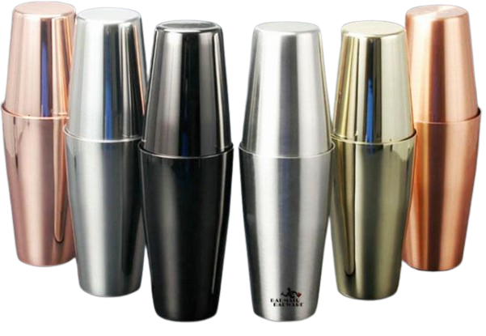
Mixing
Boston Shaker
▼

Αποτελείται από δύο μέρη — ένα μεταλλικό tin και ένα γυάλινο ή μικρότερο μεταλλικό tin. Χρησιμοποιείται για shake cocktails. Το πιο συνηθισμένο shaker στα επαγγελματικά bars.
Shake
Dry Shake
Margarita
Daiquiri
Pro TipΤο σωστό shake ξεκινά από τους ώμους και όχι μόνο από τους καρπούς. Ο πάγος πρέπει να κινείται ελεύθερα μέσα στο shaker για 10–15 δευτερόλεπτα.
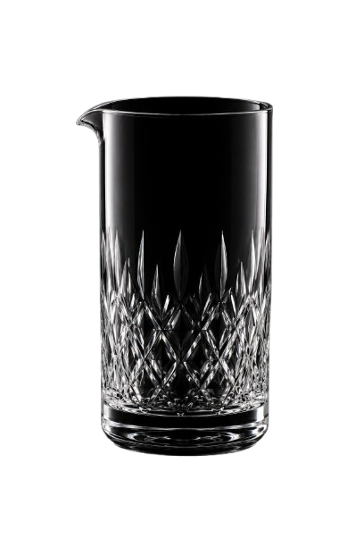
Mixing
Mixing Glass
▼

Γυάλινο ή κρυστάλλινο δοχείο για stir cocktails. Επιτρέπει να βλέπεις το cocktail καθώς το ανακατεύεις και διατηρεί τη θερμοκρασία σταθερή.
Stir
Negroni
Manhattan
Dry Martini
Pro TipΑν ένα cocktail περιέχει μόνο spirits, λικέρ ή vermouth, γίνεται stir στο mixing glass — ποτέ shake. Το shake δημιουργεί αέρα και αλλοιώνει την υφή.
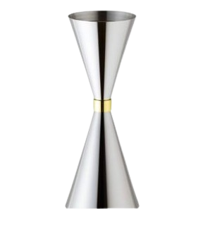
Μέτρηση
Jigger
▼

Διπλή μεζούρα για την ακριβή μέτρηση υλικών. Συνήθως 25ml/50ml ή 30ml/60ml. Είναι το πιο σημαντικό εργαλείο για τη συνέπεια στα cocktails.
Κάθε cocktail
25ml / 50ml
30ml / 60ml
ΚανόναςΠοτέ μην μετράς με το μάτι. Η διαφορά 5ml μπορεί να καταστρέψει την ισορροπία ενός cocktail. Το jigger δεν είναι επιλογή — είναι υποχρέωση.
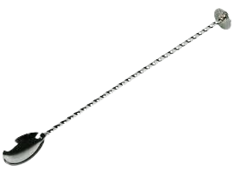
Ανάμειξη
Bar Spoon
▼

Μακρύ κουτάλι με σπειροειδή λαβή. Χρησιμοποιείται για stir cocktails στο mixing glass, για layering και για ελαφρύ ανακάτεμα σε build drinks.
Stir
Layer
Build
Pro TipΚατά το stir, κράτα το bar spoon ανάμεσα στα δάχτυλα και κάνε κυκλικές κινήσεις αργά και ομαλά — το κουτάλι δεν πρέπει να χτυπά τα τοιχώματα.

Σούρωμα
Hawthorne Strainer
▼
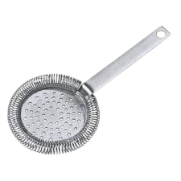
Το κλασικό σουρωτήρι του bartender με σπιράλ ελατήριο. Τοποθετείται στο shaker ή στο mixing glass και κρατά τον πάγο εκτός ποτηριού κατά το σούρωμα.
Strain
Μετά το shake
Μετά το stir
Pro TipΠίεσε σταθερά το strainer στο shaker. Αν αφήσεις κενό, θα πέσουν κομμάτια πάγου στο ποτήρι.

Σούρωμα
Fine Strainer
▼
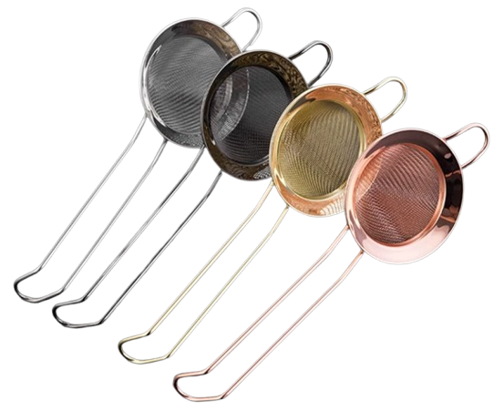
Λεπτό σουρωτήρι (σαν σουρωτήρι τσαγιού) που αφαιρεί μικρά κομμάτια πάγου, υπολείμματα φρούτων και σωματίδια. Χρησιμοποιείται μαζί με το Hawthorne για double strain.
Double Strain
Straight up cocktails
Coupe
Martini Glass
Pro TipΑπαραίτητο για cocktails που σερβίρονται σε παγωμένο ποτήρι χωρίς πάγο — κάθε τεμαχίδιο φαίνεται και αλλοιώνει την εμφάνιση.
Προετοιμασία
Muddler
▼

Γουδί μπάρας για την απαλή πίεση φρούτων και βοτάνων. Απελευθερώνει χυμούς και αιθέρια έλαια χωρίς να τα καταστρέφει.
Muddle
Mojito
Caipirinha
Old Fashioned
Pro TipΟ δυόσμος δεν πρέπει να λιώνει — ελαφρύ πάτημα αρκεί. Υπερβολική πίεση βγάζει πικρές γεύσεις από τα στελέχη.
Garnish
Peeler / Ξεφλουδιστής
▼

Χρησιμοποιείται για την κοπή φλούδας εσπεριδοειδών (orange peel, lemon twist). Η λεπτή φλούδα περιέχει αιθέρια έλαια που αναδεικνύουν το άρωμα του cocktail.
Orange Peel
Lemon Twist
Garnish
Pro TipΜετά την κοπή, "express" τη φλούδα πάνω από το ποτήρι — πιέσεις ελαφρά ώστε τα αιθέρια έλαια να πέσουν στην επιφάνεια του cocktail.
Επιπλέον Εργαλεία

Κοπή
Μαχαίρι & Ξύλο Κοπής
▼
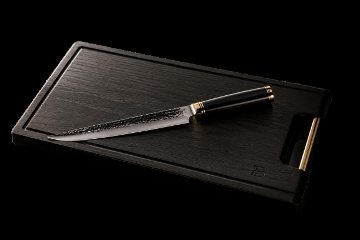
Απαραίτητα για την προετοιμασία garnishes — wedges, wheels, φλούδες. Το μαχαίρι πρέπει να είναι πάντα κοφτερό για ακριβή κοπή.
Lime wedges
Lemon wheels
Garnish prep
Pro TipΕτοίμαζε τα garnishes σου πάντα πριν το service ξεκινήσει — ποτέ υπό πίεση την ώρα που έχεις παραγγελίες.

Χυμός
Στύφτης
▼
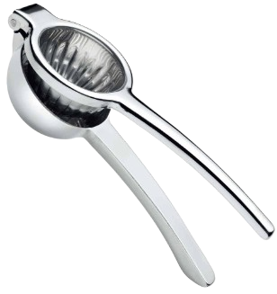
Για την εξαγωγή φρέσκου χυμού από lime, λεμόνι και πορτοκάλι. Ο φρέσκος χυμός είναι μη διαπραγματεύσιμος σε quality cocktail bar.
Lime juice
Lemon juice
Φρέσκος χυμός
ΚανόναςΠοτέ έτοιμος χυμός από μπουκάλι για sour cocktails. Ο φρέσκος χυμός είναι η διαφορά ανάμεσα σε ένα καλό και ένα μέτριο cocktail.
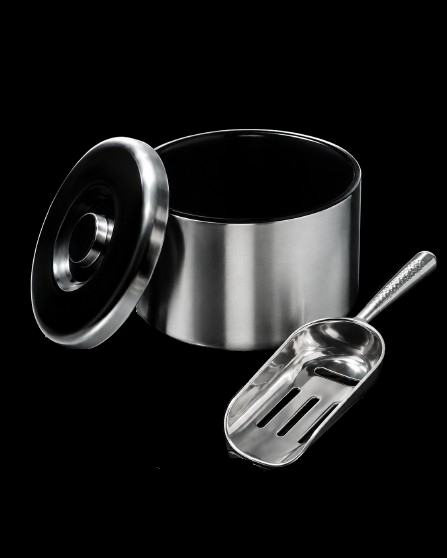
Πάγος
Σέσουλα & Παγοθήκη
▼

Η σέσουλα χρησιμοποιείται για να παίρνεις πάγο από την παγοθήκη. Ποτέ μην χρησιμοποιείς το ποτήρι ως σέσουλα — κινδυνεύει να σπάσει και να μολύνει τον πάγο.
Ice handling
Πάντα σέσουλα
Κανόνας ΑσφαλείαςΠοτέ μην βάζεις το ποτήρι στον πάγο για να το γεμίσεις. Αν σπάσει, όλος ο πάγος πρέπει να πεταχτεί.

Σερβίρισμα
Speed Pourers / Ροή
▼
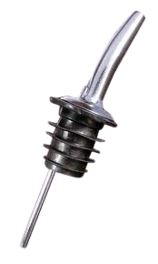
Ακροφύσια που τοποθετούνται στα μπουκάλια για σταθερή ροή υγρού. Επιτρέπουν γρήγορο και ακριβές σερβίρισμα σε bars με πολύ κίνηση.
Speed service
Σταθερή ροή
Well bottles
Pro TipΑκόμα και με speed pourers, χρησιμοποίησε jigger. Η "free pour" μέτρηση με μέτρημα δευτερολέπτων δεν είναι αξιόπιστη για quality bars.

Blend
Blender
▼
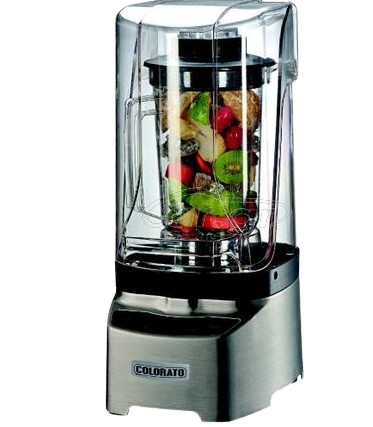
Για frozen cocktails και κρεμώδεις παρασκευές. Το bar blender είναι πιο ισχυρό από τον οικιακό και σχεδιασμένο για συνεχή επαγγελματική χρήση με πάγο.
Frozen Margarita
Piña Colada
Frozen Daiquiri
Pro TipΠρόσθεσε μικρές ποσότητες πάγου κάθε φορά για να ελέγχεις την τελική υφή. Πολύς πάγος μαζί = άνιση ανάμειξη.
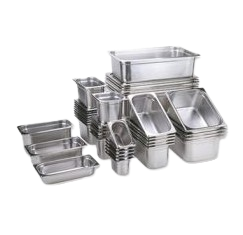
Mise en Place
Γαστρονόμος
▼

Ανοξείδωτα δοχεία GN για την οργάνωση του mise en place. Χρησιμοποιούνται για έτοιμα κομμένα garnishes — lime, λεμόνι, πορτοκάλι, ανανάς, αγγούρι, φύλλα δυόσμου — που χρειάζονται γρήγορη πρόσβαση κατά τη διάρκεια του service.
Lime wedges
Lemon wheels
Φύλλα δυόσμου
Mise en place
Pro TipΠριν κάθε service κόψε και γέμισε τους γαστρονόμους με όλα τα έτοιμα garnishes — lime wedges, lemon wheels, φύλλα δυόσμου, κομμένο αγγούρι και ανανά. Εξοικονομείς χρόνο και διατηρείς τάξη πίσω από τη μπάρα κατά τη διάρκεια του service.